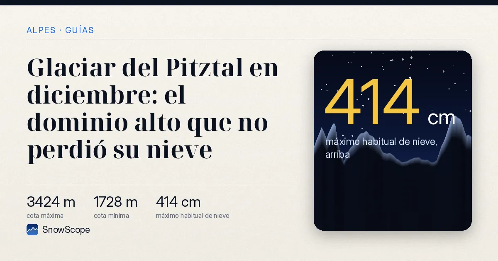

Glaciar del Pitztal en diciembre: el dominio alto que no perdió su nieve
Pitztaler Gletscher va contracorriente. Mientras muchas estaciones alpinas muestran profundidades de nieve en diciembre decrecientes en las últimas décadas, este glaciar en Tirol se mantuvo estable o mejoró: media montaña pasó de 77 cm de media en los años 80 y 90 a 85 cm en los últimos 15 inviernos. Esa estabilidad hace que diciembre aquí sea una apuesta rara que vale la pena tomar.
Consulta la previsión de nieve en tiempo real de Pitztaler Gletscher en la app SnowScopeEspesor de nieve, alertas de nieve polvo y mapa 3D, gratis.
Lo que el terreno glaciar te compró
La altura y el hielo importan. La cima de Pitztaler Gletscher está a 3424 m, muy por encima de la línea de lluvia de diciembre. A esa altitud cada invierno en nuestro registro de 46 años tuvo 30 cm o más a mediados de diciembre, y el 100 % mantuvo al menos 60 cm para la semana de Navidad. La estación de media montaña a 2576 m muestra el mismo registro perfecto: ni un invierno bajó de 30 cm en la semana del 15–21 de diciembre.
En un 15 de diciembre típico la estación media tiene 87 cm y la cima 171 cm. Para Navidad la estación media está alrededor de 92 cm. En el 85 % de los inviernos, esa altura media tuvo 60 cm o más para la semana de Navidad—la zona de nieve profunda, no la zona de rascar.


La base: una historia diferente
La estación de valle a 1728 m cuenta una historia diferente. En un 15 de diciembre típico tiene 32 cm—por encima del umbral de 30 cm, pero solo justo. Solo el 59 % de los inviernos alcanzan 30 cm en la semana anterior a Navidad allí, y el día típico para encontrar 30 cm en el suelo es el 10 de diciembre.
Esto importa para familias o esquiadores que quieren entrar en calor a menor altitud. El plan aquí es subir pronto y esquiar desde media montaña o la cima, luego bajar en remonte. La roca puede asomar en la base a principios de diciembre. El invierno pasado (2025–26) es un caso de estudio: el 15 de diciembre había solo 16 cm en la base, aunque la estación media tenía 50 cm.
Diciembre este invierno frente a inviernos anteriores
La tendencia a largo plazo es tu aliada. El antiguo debate sobre si diciembre está nevando más o menos no se aplica aquí. En la cima, el promedio de diciembre subió de 142 cm en los primeros 15 inviernos a 174 cm en los últimos 15. Incluso la base mejoró: de 31 cm a 35 cm. Este es un rincón de los Alpes donde el terreno glaciar alto sigue convirtiendo la humedad invernal en nieve, no lluvia.
En la semana de Navidad cada uno de los últimos 15 inviernos tuvo 30 cm o más a media montaña. La proporción con 30 cm en la base subió del 60 % al 67 %. Eso no es una garantía—ninguna temporada lo es—pero es lo más cerca que llega diciembre en los Alpes.
Precio y opciones de forfait
La temporada 2026-27 usa precios fijos: EUR 77 para un forfait diario de adulto, EUR 410 para 6 días. No se aplica descuento previo a Navidad, así que diciembre no es más barato que enero o febrero. El equilibrio es fiabilidad de nieve, no precio.
Un bonificador que vale la pena usar: un forfait de 2 días o más incluye un día en Glaciar de Kaunertal, Winterberg Fendels o Hochzeiger sin coste adicional. El área de Rifflsee, gestionado por separado, abre el 12 de diciembre de 2026 si quieres una segunda zona de bajo coste cerca.
Cómo se compara: Glaciar de Stubai al lado
Stubaier Gletscher, un valle al este, tiene nieve casi idéntica de media montaña en diciembre: 86 cm en un 15 de diciembre típico y el 100 % de los inviernos con 30 cm en la semana anterior a Navidad. Su base es ligeramente más profunda a 40 cm. Stubai también ofrece un forfait de 6 días por EUR 355—aproximadamente EUR 55 menos que Pitztal.
La ventaja de Pitztal es la altura. Con su cima a 3424 m es 216 m más alta que Stubai's 3208 m, lo que significa más terreno garantizado por encima de la línea de mal tiempo y una temporada más larga hacia la primavera. Si tu grupo está contento en carreras de media montaña, Stubai ofrece la misma nieve por menos. Si quieres elevación máxima y el día extra en otros glaciares, Pitztal justifica el coste.
Cuándo reservar dentro de diciembre
Principios de diciembre (1–7 de diciembre) es una oportunidad del 37 % en la base y 100 % en la cima—un viaje de subida y descenso. Media diciembre (8–14 de diciembre) es más seguro: el 50 % de los inviernos alcanzan 30 cm en la base para entonces. La semana del 15–21 de diciembre es la zona: 59 % en la base, 100 % en media y cima. La semana de Navidad es la mejor apuesta: el 67 % de los inviernos tienen 30 cm en la base y nieve casi segura desde media montaña hacia arriba.
El invierno pasado (2025–26) es una advertencia: incluso una temporada débil dejó 16 cm en la base el 15 de diciembre y 50 cm a media montaña. Fino, pero no desnudo. Si debes venir a principios de diciembre y no puedes adaptar planes, pregunta a la estación sobre nieve artificial en carreras bajas.
Consejos para esquiadores
- Reserva un forfait de 2 días o más: el forfait incluye un día gratis en Glaciar de Kaunertal, Winterberg Fendels o Hochzeiger. Úsalo para cubrirte contra un día de poca nieve.
- Esquía desde media montaña (2576 m) o la cima (3424 m) a principios de diciembre y desciende en remonte; la base puede tener nieve fina o parcelas desnudas hasta media montaña.
- Diciembre en el glaciar es frío: a 3424 m espera bien por debajo de cero. Lleva bolsas de calor, protección facial y gafas adecuadas para luz plana y viento.
- Si quieres terreno fuera de pista o esquí de travesía, consulta el boletín Avalanche.report – Euregio Tirol antes de ir, y contrata un guía local. Las grietas glaciares son un peligro todo el año.
- Si el precio de Pitztal te parece caro y tu grupo está contento a media montaña, compara Glaciar de Stubaier: la misma profundidad de nieve de diciembre a media altura por aproximadamente EUR 55 menos por forfait de 6 días.
Sobre estas cifras
Los espesores de nieve de las estaciones son la nieve más profunda en las pistas altas en la fecha indicada; son estimaciones para una zona, no una medida en un punto. Las previsiones pueden cambiar. Consulta siempre el boletín oficial de aludes antes de salir fuera de pista.
Boletines oficiales de aludes: Avalanche.report – Euregio Tyrol
Citar este informe
Para investigación, docencia o prensa: cifras y gráficos reutilizables libremente bajo CC BY 4.0 con esta cita.
SnowScope (2026), Glaciar del Pitztal en diciembre: el dominio alto que no perdió su nieve, https://snowscope.app/blog/es/2026/11/pitztal-glacier-december-ski-snow-sure-price.html, consultado el 2026-11-14
SnowScope (Atlas Labs). (2026, November 14). Glaciar del Pitztal en diciembre: el dominio alto que no perdió su nieve. SnowScope snow reports. https://snowscope.app/blog/es/2026/11/pitztal-glacier-december-ski-snow-sure-price.html
BibTeX
@misc{snowscope2026pitztalglacierdecembersk,
author = {{SnowScope (Atlas Labs)}},
title = {Glaciar del Pitztal en diciembre: el dominio alto que no perdió su nieve},
year = {2026},
month = nov,
howpublished = {\url{https://snowscope.app/blog/es/2026/11/pitztal-glacier-december-ski-snow-sure-price.html}},
note = {Published 2026-11-14 14:54 UTC; accessed 2026-11-14}
}· CC BY 4.0 · Métodos, datos y herramientas →
Sigue Pitztaler Gletscher
Gratis: un aviso cuando llega la nieve y la previsión cada mañana.